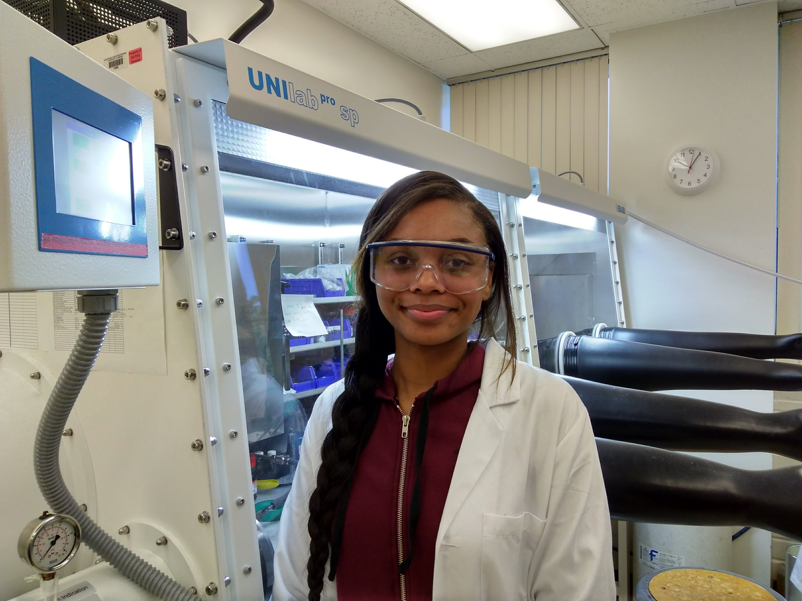

Where do Alumni from our lab end up?
Undergraduate Alumni placements
Ph.D. Programs in Chemistry: Brown University, UC Irvine, Notre Dame, Univeristy of Pennsylvania, UT Dallas, University of Georgia
Dental School: UC San Francisco
Pharmacy (PharmD): UNC Chapel Hill
Nursing: CSU Fullerton
Industry: Curative, Ecolab
Government: Los Alamos National Laboratory
Graduate (M.S.) Alumni placements
Ph.D. Programs in Chemistry: UC Riverside, Florida State University
Industry: PPG
Government: City of LA
Teaching: Ruben S. Ayala High School
List of Alumni
Fall 2015: Sylvia Speights (Master student)

Winn Huynh is Chemistry Posdoctoral Scholar through the STARS program, and joined the group Jun.-Aug. 2022.
Hellen Marin is in the STARS program and joined the group Jan. - May 2022 and synthesized bis(imidazolium) salts.
Kimberly Olivares is Chemistry major, NSF SPIRES fellow, and joined the group in Sept. 2021-May 2022. She synthesized bis(imidazolium) salts.

Justin Tabay Cortez, BS in Chemistry at CPP, now doing his teaching credential and MS. He joined March 2016-May 2022.
Nicole Avila is a Chemistry major and joined the group in Feb. 2020-May 2022. She computationally studies Ni nitrosyls.

Kevin Liang is a Master's candidate and joined the group in Feb. 2019-Aug. 2021 and makes nickel complexes.
Emily Thompson is a Chemistry major and LSAMP Fellow. She joined Sept. 2018-Dec. 2020 and makes Fe complexes.
Adrian Torres is a Chemistry major and LSAMP Fellow. He joined the group in June 2019-May 2021. He works with Co and Fe. He is now doing a Chemistry PhD at U. Georgia.
Zijie Zhang is a Chemistry major and NSF SPIRES Fellow. She joined in March 2017-May 2021. She makes Ni nitrosyl complexes. She is now in PharmD program at UNC Chapel Hill.
Jocelyn Maragno is a Master's candidate and joined the group in Dec. 2017-Jan. 2020 and conducts computations of V clusters.
Elisa Olivas is a Chemistry major and joined the group in Nov. 2019-Aug. 2021. She is studying crystallography. She is now in Chemistry PhD program at UC Irvine.
Carlos Gutierrez is Chemistry major and joined the group in Jun. 2019-Dec. 2020. He computes XES spectra of copper hyponitrites.
Brenda Henriquez is a Master's candidate who joined in Jun. 2019-May 2021 and studies X-ray absorption spectroscopy.

Alexis Hoxie is a Chemistry major and LSAMP Fellow. She joined in Jan. 2018-May 2021 and is making Fe-NO complexes.
Evan Bonnand is a Biotechnology major and joined the group in Sept. 2019-May 2021. He is making Fe nitrosyls. He is now in Chemistry PhD program at UT Dallas.
Jacob P. Brannon is a Master's candidate and joined the group in Aug. 2018-Aug. 2020. He is the group crystallographer. He is in Chemistry PhD program at Florida State U.
Hector Alarcon. Feb. 2016-Oct. 2017 (B.S. Biology), McNair Scholar, Kellogg Presidential Fellow, and LSAMP fellow. Was a lab technician at Ecolab, now at UCSF dental school.

Jessica De la Huerta Oct.-Dec. 2019. She is studying crystallography.

Tiffany Lopez Sept. 2017-June 2018 (M.S. Chemistry). Joint student with Dr. Barding.

Karlos Manzanarez Summer 2017 student from Cypress Community College. Now at UCLA.
Jonathan Stoffel June 2016 - June 2018 (B.S. Chemistry), LSAMP Fellow. Currently Ph.D. Candidate at Notre Dame.

Jason Chiang is a Computer Science major.
Phan Phu February 2016-December 2018 (B.S. Chemistry) winner 2017 Goldstein Research Award. Ph.D. Candidate at UC Irvine.
Erica Hummel Sept. 2018-Jun. 2019 (M.S. Chemistry) joint with Dr. Barding. She has worked on a publication with the Stieber Lab.

Luc Frost-Neto was a high school student in the group Summer 2019. He worked with lanthanides.
Andria Luna is from Cypress Community College and joined the group Summer 2019. She worked with lanthanum.
Madeline Ontiveros goes to Bonita High School and joined the group Summer 2019. She worked with lanthanides.
Thomas Phan is from Cypress Community College and joined the group Summer 2019. He worked with gadolinium.

Beverly Stretch is a Chemistry major and RISE Fellow. She joined the group in Jan. 2017-Dec. 2019 and made V complexes.